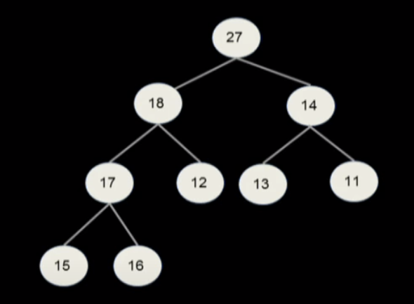
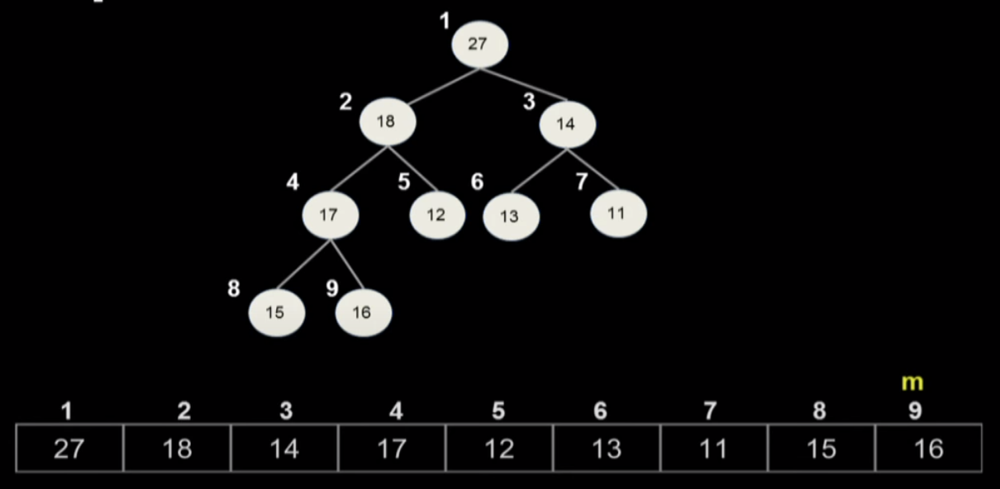
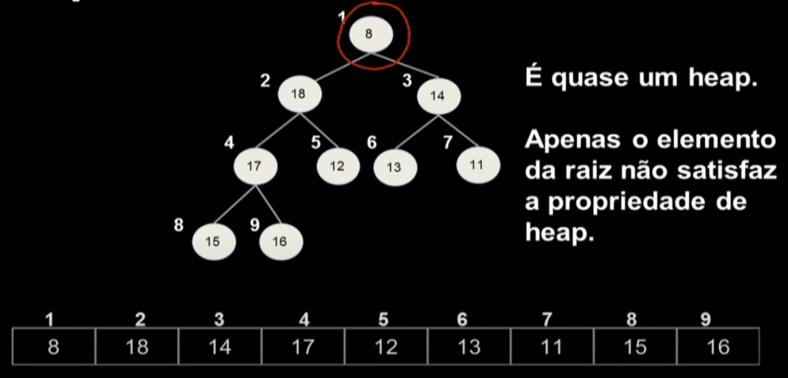
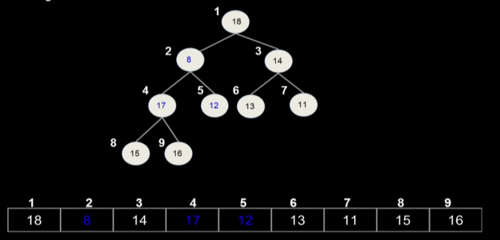
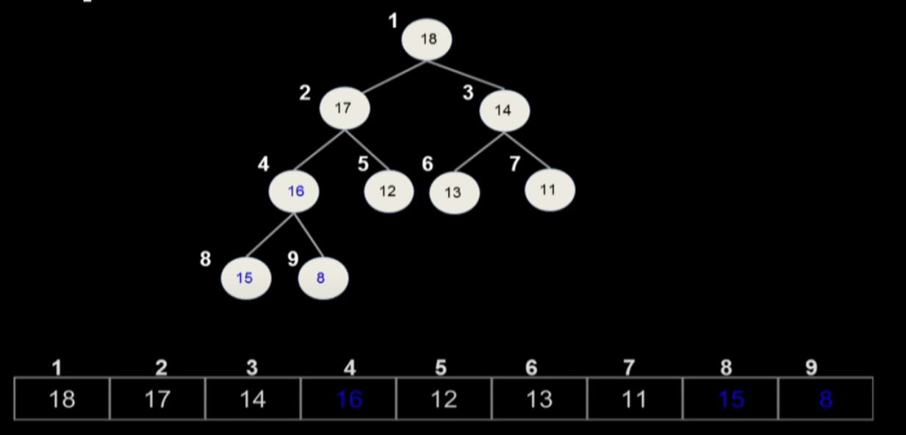
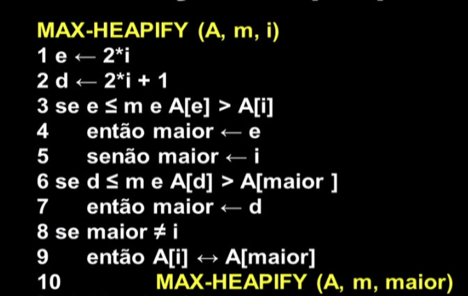
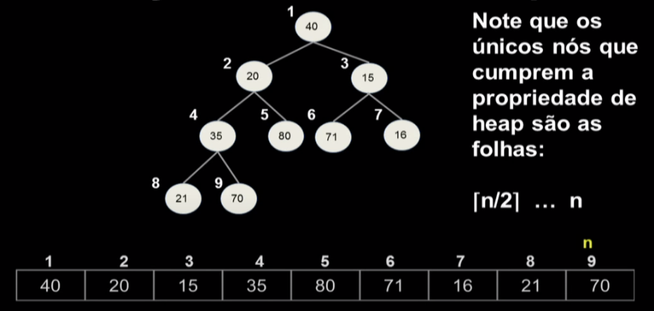
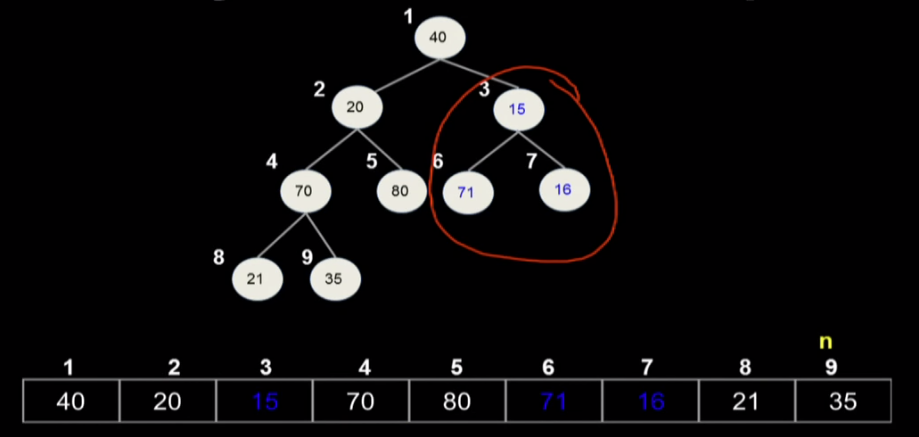
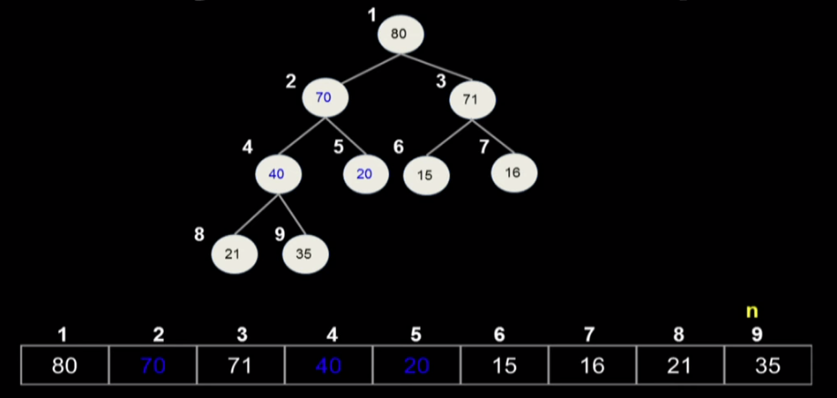

Disciplinas
-
ESTRUTURA DE DADOS-T01-2024-1 Concluído
Materiais
Vídeo 1 - Projeto e Análise de Algoritmos - Aula 07 - A estrutura de dados heap. sendProf° ministrante: Karina Valdivia Delgado.
Conteúdo
A estrutura de dados heap.
Roteiro.
- Definição de heap.
- Manutenção da propriedade de heap.
- Construção de um max-heap.
Heap.
- É uma estrutura de dados que pode ser visualizada como uma árvore binária quase completa.
- Cada nó da árvore é ocupado por um elemento e temos as seguintes propriedades:
- A árvore é completa até o penúltimo nível
- No último nível as folhas estão o mais à esquerda possível
- O conteúdo de um nó é maior ou igual ao conteúdo dos nós na subárvore enraizada nele (max-heap)
- O conteúdo de um nó é menor ou igual ao conteúdo dos nós na subárvore enraizada nele (min-heap).
Essas condições garantem que ele possa ser armazenado em um vetor A[1...m]
Vetor:
- Para qualquer nó i:
- 2i é o filho esquerdo de i
- 2i + 1 é o filho direito de i
- Quem é o pai de i?
[i/2] é o pai de i.
Para todo i=2,3,...,m: A[[i/2]] ≥ A[i]
Cada nível p tem exatamente 2p nós, exceto talvez o último.
Ex. o nível 2 tem 4 nós.
A altura de um nó i é o maior comprimento de um caminho de i até uma folha, isto é, o número de arestas no caminho mais longo desde i até uma folha.
Manutenção da propriedade de Heap.
 Para transformar o vetor num heap bastou rebaixar o 8 até ele satisfazer a propriedade de heap.
Recebe o vetor A [1 ...m] e o índice i, tal que as árvores com raízes nos filhos esquerdo e direito do nó i são max-heaps.
Para encontrar a posição onde está o elemento maior entre o filho esquerdo, filho direito e i.
Construção de um max-heap.
A ideia do algoritmo que constrói um heap com base num vetor que não é um heap é montar o heap a partir das folhas.
  Dado um vetor A[1...n] qualquer, o algoritmo monta a partir dele um max-heap.
- BUILD-MAX-HEAP (A, n)
- 1. para i [n/2] decrescendo até 1 faça
- 2. MAX-HEAPIFY (A, n, i)
Análise grosseira
Θ(π/2)
O(n/2 lg n)
=O(nlgn)
Análise detalhada: Precisamos contar o número de nós em cada nível e multiplicar pelo custo do max-heapify para cada um (que depende da altura do nó)
O consumo de tempo de BUILD-MAX-HEAP é Θ(η).